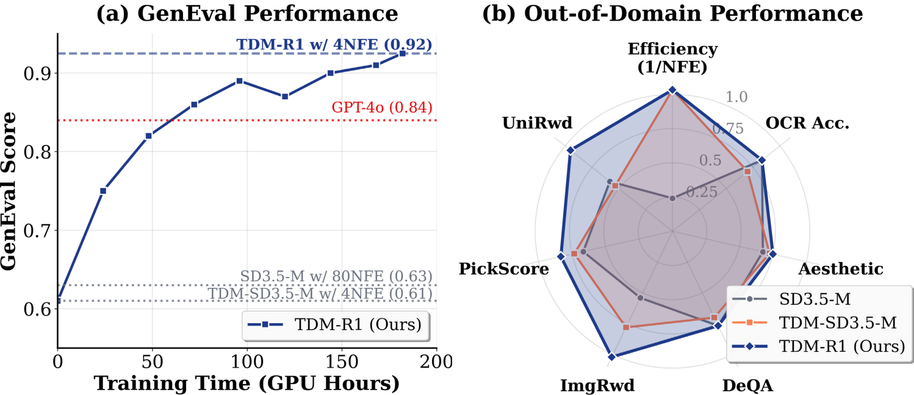
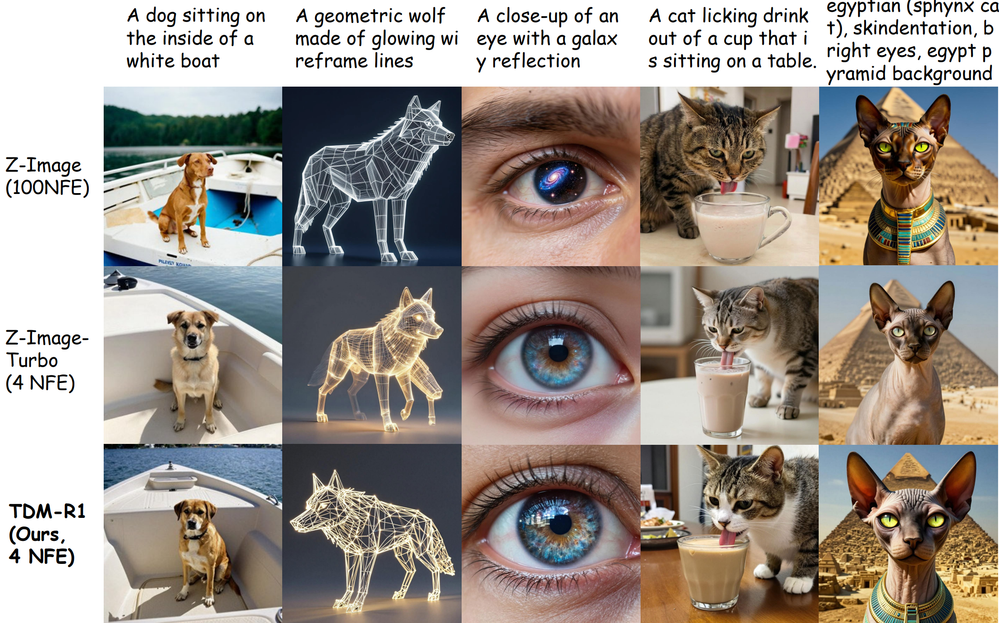
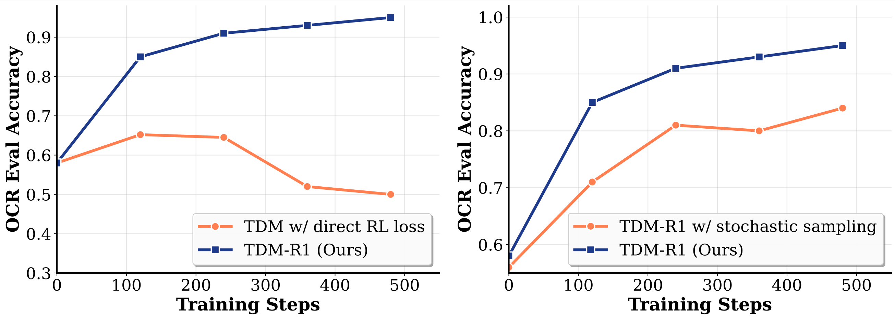
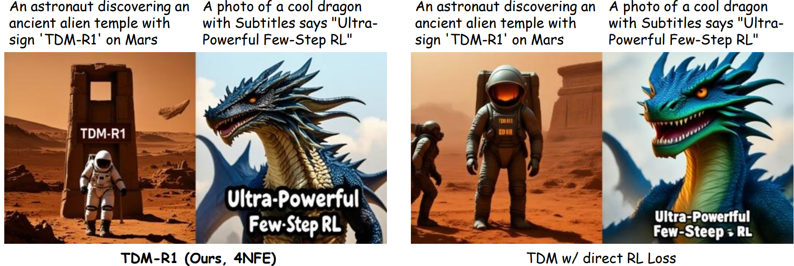
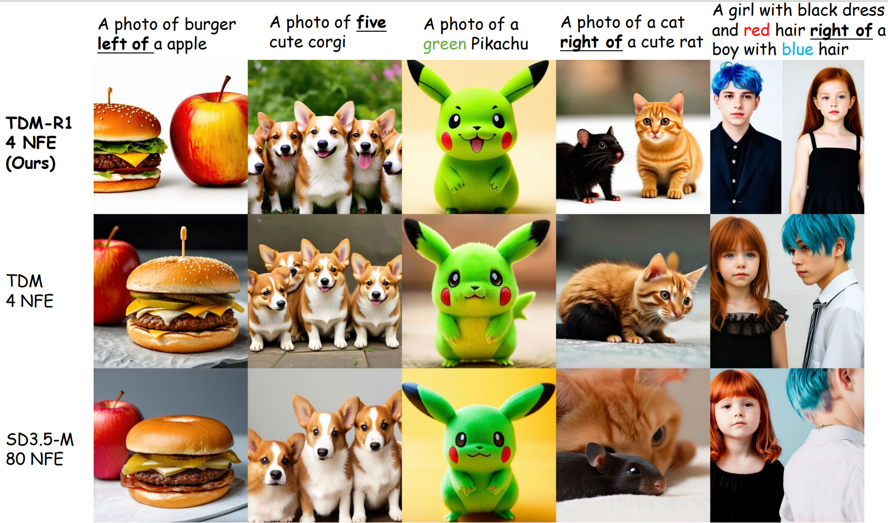

TDM-R1: Reinforcing Few-Step Diffusion Models
with Non-Differentiable Reward
Yihong Luo1
Tianyang Hu2
Weijian Luo3
Jing Tang4,1
1Hong Kong University of Science and Technology
2The Chinese University of Hong Kong, Shenzhen
3hi-Lab, Xiaohongshu Inc
4Hong Kong University of Science and Technology (Guangzhou)
[Paper]
[Github]
[BibTeX]

Samples generated by TDM-R1 using only 4 NFEs, obtained by reinforcing the recent powerful Z-Image model.
TDM-R1 consistently outperforms both the 100-NFE base model and the few-step baseline across all metrics.
While few-step generative models have enabled powerful image and video generation at significantly lower cost,
generic reinforcement learning (RL) paradigms for few-step models remain an unsolved problem.
Existing RL approaches for few-step diffusion models strongly rely on back-propagating through differentiable reward models,
thereby excluding the majority of important real-world reward signals, e.g., non-differentiable rewards such as humans' binary likeness, object counts, etc.
To properly incorporate non-differentiable rewards to improve few-step generative models,
we introduce TDM-R1, a novel reinforcement learning paradigm built upon a leading few-step model,
Trajectory Distribution Matching (TDM).
TDM-R1 decouples the learning process into surrogate reward learning and generator learning.
Furthermore, we developed practical methods to obtain per-step reward signals along the deterministic generation trajectory of TDM,
resulting in a unified RL post-training method that significantly improves few-step models' ability with generic rewards.
We conduct extensive experiments ranging from text-rendering, visual quality, and preference alignment.
All results demonstrate that TDM-R1 is a powerful reinforcement learning paradigm for few-step text-to-image models,
achieving state-of-the-art reinforcement learning performances on both in-domain and out-of-domain metrics.
Furthermore, TDM-R1 also scales effectively to the recent strong Z-Image model,
consistently outperforming both its 100-NFE and few-step variants with only 4 NFEs.
Key Results
TDM-R1 rapidly boosts the GenEval score of the few-step TDM, notably outperforming its many-step base model and GPT-4o,
without sacrificing out-of-domain metrics.
Furthermore, TDM-R1 scales to the powerful 6B-parameter Z-Image model,
consistently outperforming both its 100-NFE and few-step variants with only 4 NFEs.

TDM-R1 rapidly boosts GenEval score of few-step TDM, notably outperforming its many-step base model and GPT-4o.
This is achieved without sacrificing out-of-domain metrics.

Qualitative comparisons of TDM-R1 against competing methods on the Z-Image backbone (6B parameters).
TDM-R1 with 4 NFEs surpasses both the 100-NFE Z-Image base model and the few-step Z-Image-Turbo.
Methodology
TDM-R1 addresses reinforcement learning via non-differentiable reward of few-step diffusion models through three key components:
1)Accurate Intermediate Reward Estimation via Deterministic Trajectories.
TDM-R1 is built upon TDM, which performs sampling via deterministic (ODE) trajectories.
This enables unbiased reward estimation for every intermediate denoising step along the trajectory,
significantly reducing variance compared to stochastic (SDE) sampling and enabling faster convergence.
2) Surrogate Reward Learning.
To handle non-differentiable reward signals, TDM-R1 learns a diffusion-parameterized Surrogate Reward via
group-based preference optimization (inspired by GRPO and DGPO). The surrogate reward provides fine-grained,
differentiable guidance at each step along the trajectory. A Dynamic Reference Model (EMA of the reward model)
stabilizes training and prevents overfitting to noisy signals.
3) Few-Step Generator Learning.
The few-step generator is trained to maximize the Surrogate Reward while maintaining a reverse KL regularization
with respect to the pretrained teacher diffusion model at the distribution level—
a less restrictive constraint than the instance-level KL used in standard diffusion RL.
By jointly training the Generator and Surrogate Reward, TDM-R1 establishes a GAN-like synergistic loop:
the Generator produces higher-quality samples, while the Surrogate Reward adapts to provide
increasingly precise per-step guidance, enabling TDM-R1 to achieve state-of-the-art reinforcement learning performance.

Training performance and speed comparison of TDM-R1 and potential baselines.
Deterministic trajectories yield faster convergence and superior performance.

Comparison of TDM-R1 with the direct combination of TDM and RL loss.
Direct combination leads to blurry results; TDM-R1 maintains high image quality.
Qualitative Comparison
We present qualitative comparisons of TDM-R1 against competing methods, trained with GenEval signal.
TDM-R1 follows instructions more accurately than both the few-step baseline and the 80-NFE base model,
while preserving high generation quality. The same initial noise is used across all models.

Project page template is borrowed from DreamBooth.
This work builds upon TDM.